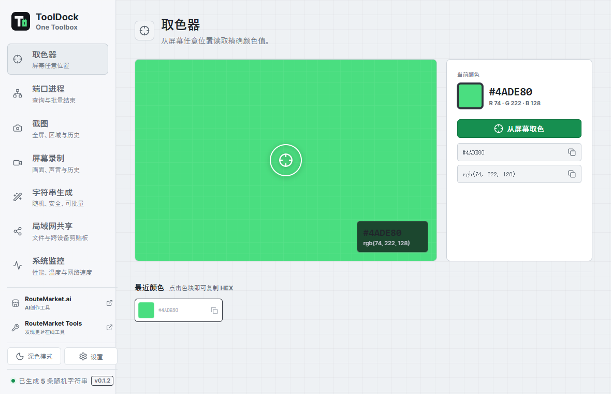
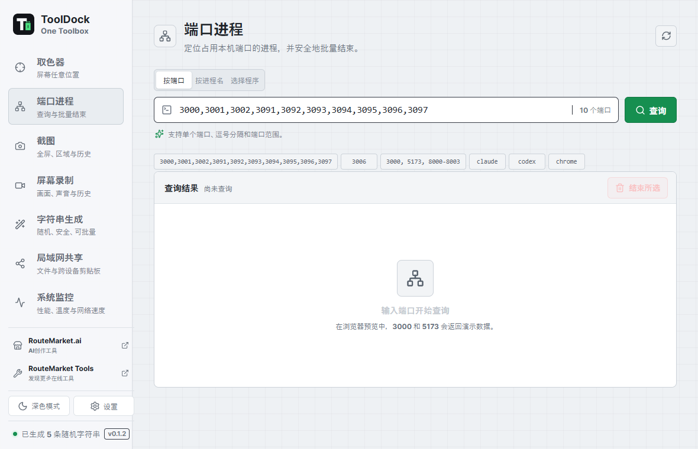
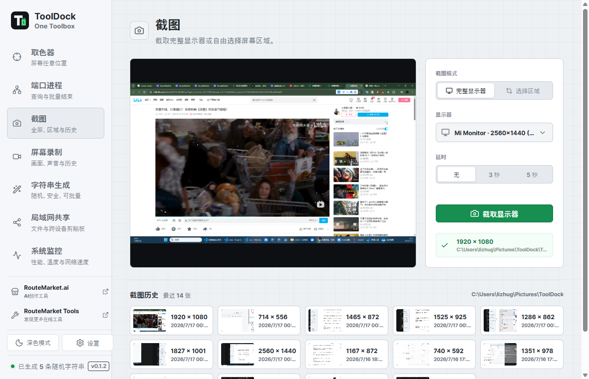
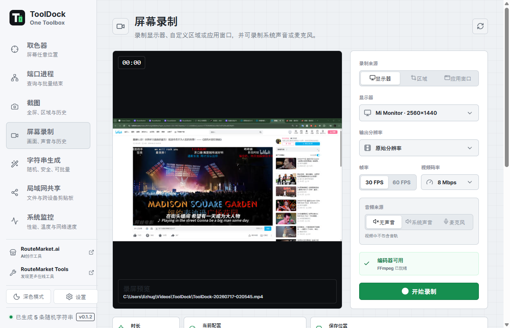
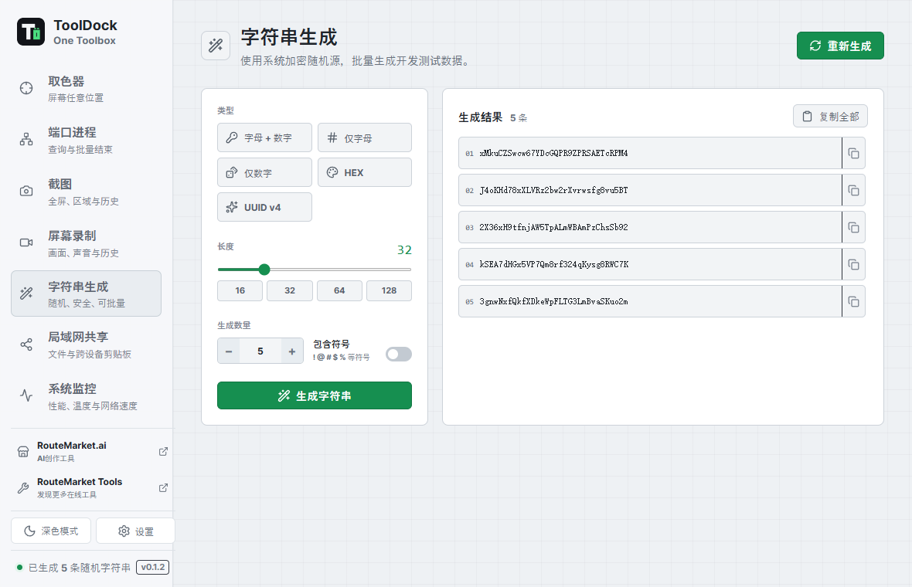
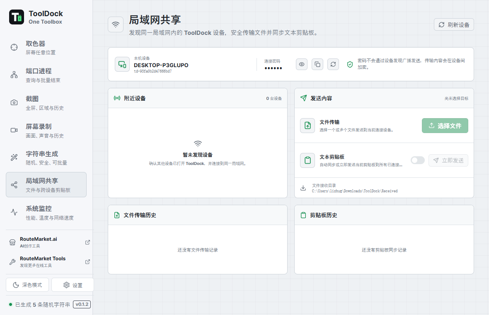
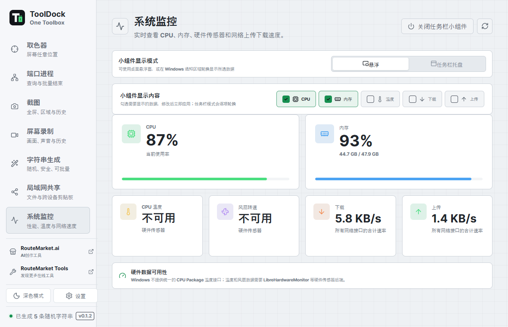

Screen color picker
Pick across displays with an overlay and magnifier, then copy HEX and RGB instantly.
Developer desktop toolbox
Keep the small utilities that interrupt development in one fast, local, cross-platform workspace.
Stay in flow
ToolDock brings screen, process, and text utilities together without sending your data through a browser service.
One dock, daily tools
Pick across displays with an overlay and magnifier, then copy HEX and RGB instantly.
Find the process behind one port or a range, then terminate selected entries in one action.
Capture a display or a selected region, copy it to the clipboard, and revisit local history.
Record a display, region, or app window with live preview, quality controls, and optional audio.
Generate UUIDs, HEX values, passwords, and custom-length random strings in batches.
Discover nearby ToolDock devices, connect with a shared password, and transfer files directly across the local network.
Send clipboard text to a connected computer and paste it there without routing content through a cloud service.
Watch CPU, memory, temperature, fan speed, and network throughput from a compact floating or notification-area widget.
Designed for momentum
Global shortcuts open color picking, region capture, and recording. ToolDock can stay in the system tray while histories and preferences remain ready for the next task.
Use configurable global shortcuts or the compact sidebar.
Select the active display, region, or application window.
Copy immediately or return to local screenshot and recording history.
The actual app
Eight current screenshots cover screen tools, process inspection, local sharing, text generation, and live system monitoring.








Open-source desktop app
Release assets are published on GitHub. Choose the package for your operating system and follow the platform installer.
Use the NSIS installer or MSI package from the latest release.
View downloads →Download the DMG for your Mac architecture from the latest release.
View downloads →Choose an AppImage or distribution package from the latest release.
View downloads →Release packages include a verified FFmpeg sidecar for H.264 MP4 recording and audio input detection.
Open source and local first
ToolDock is released under the MIT License. Inspect the source, build it yourself, and adapt it to your workflow.